Overview
In this project, we .
Section I: Bezier Curves and Surfaces
Part 1: Bezier Curves with 1D de Casteljau Subdivision
- De Casteljau’s algorithm draws a curve that is defined by n points by interpolating between each point with regards to t. In our algorithm, we looped through the points, and did lerp(t, point i, point i+1), adding each of the resultant list of 2D vectors.
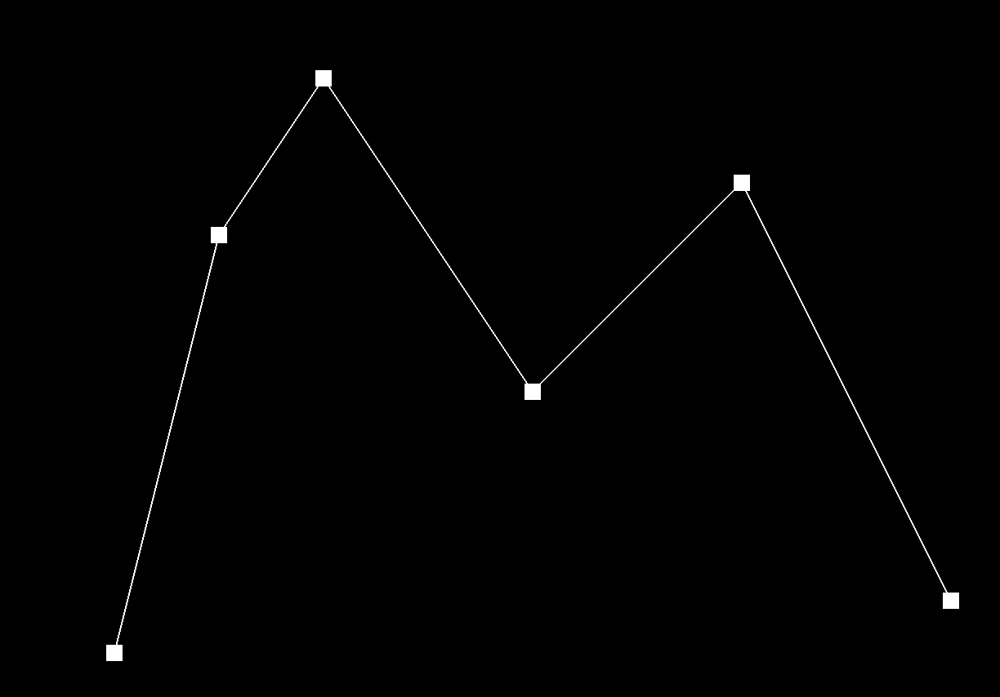 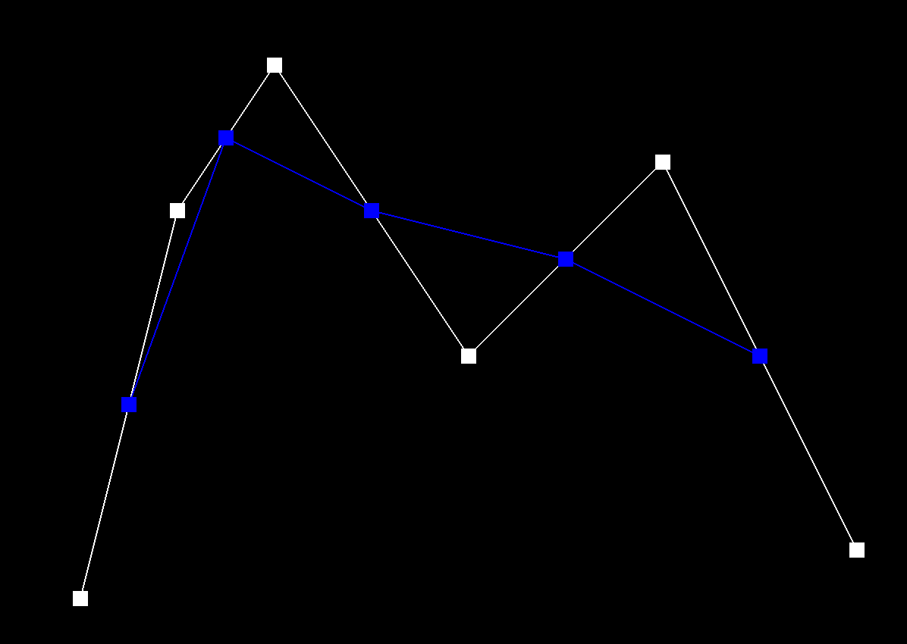
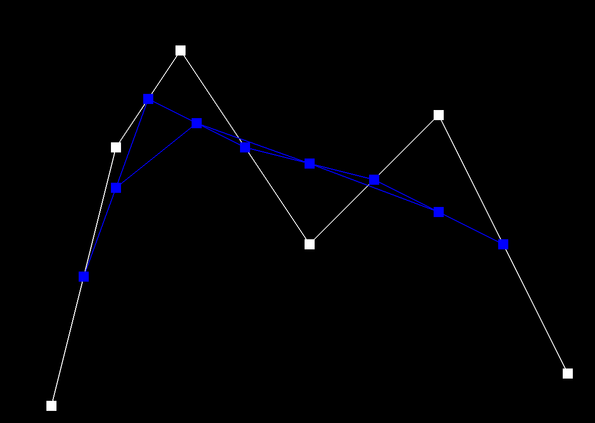 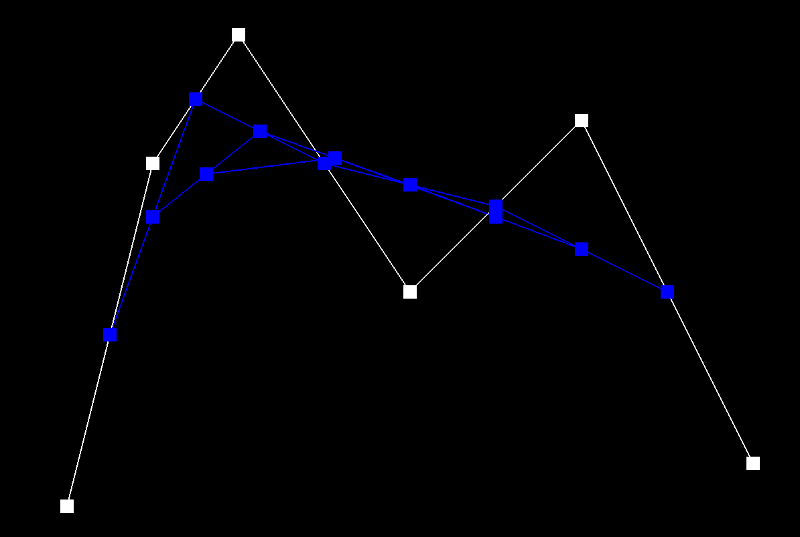 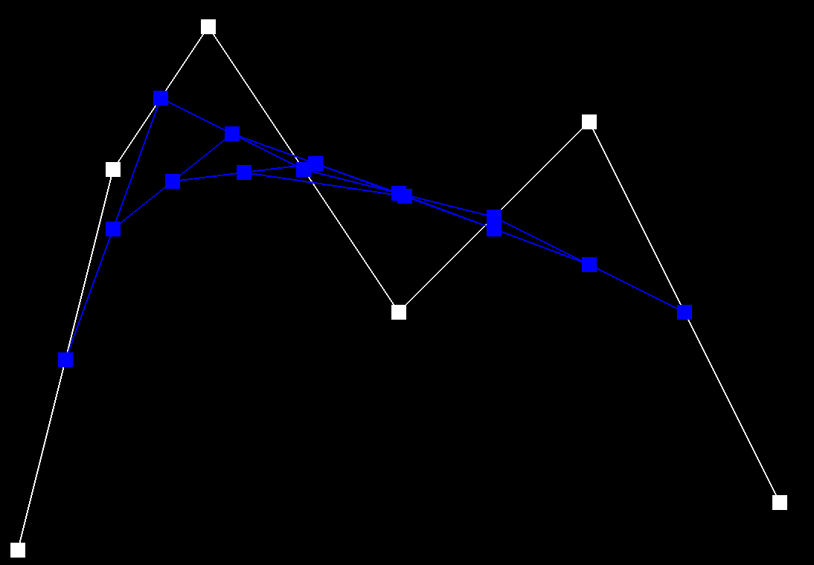 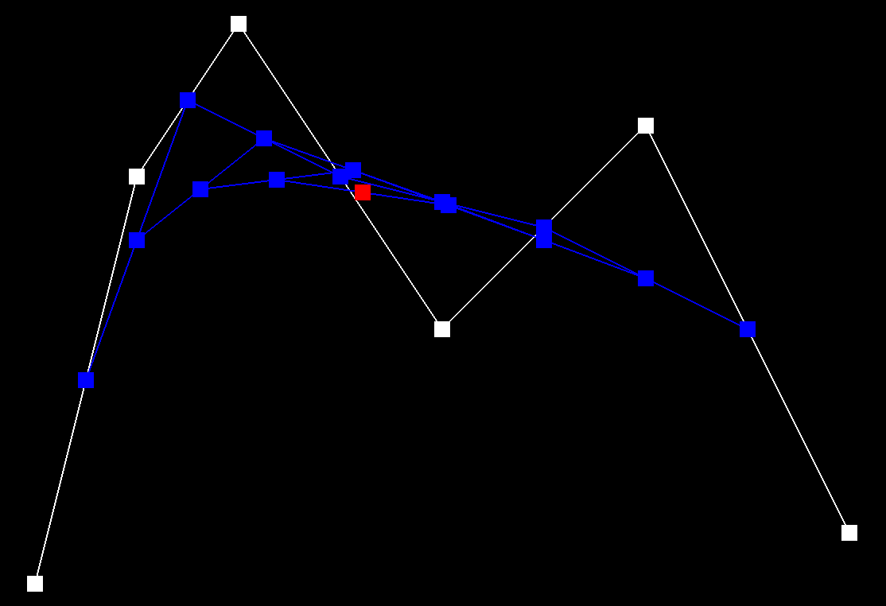 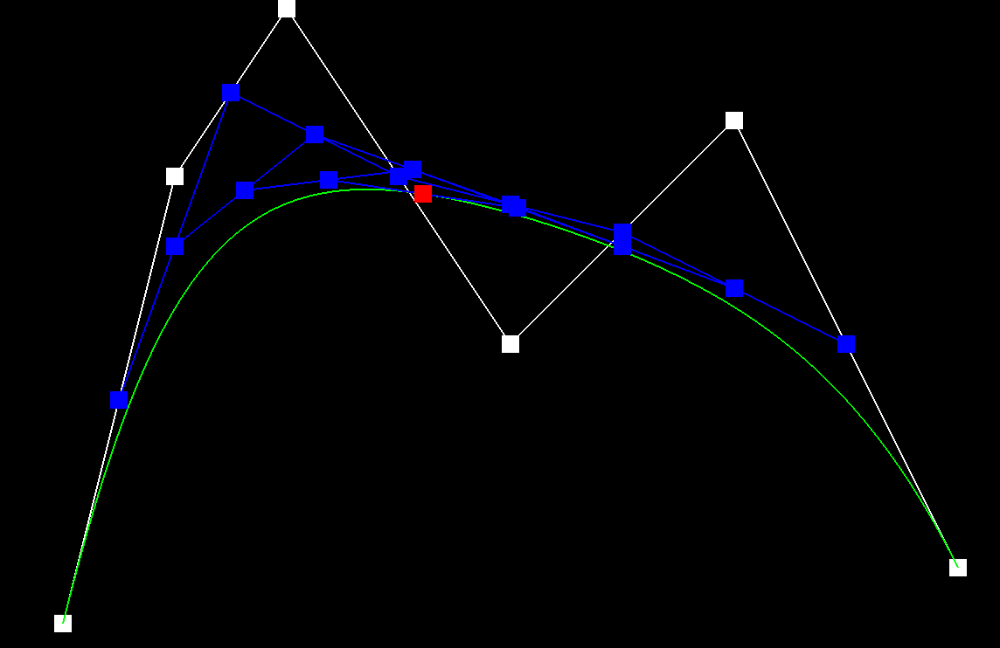 -
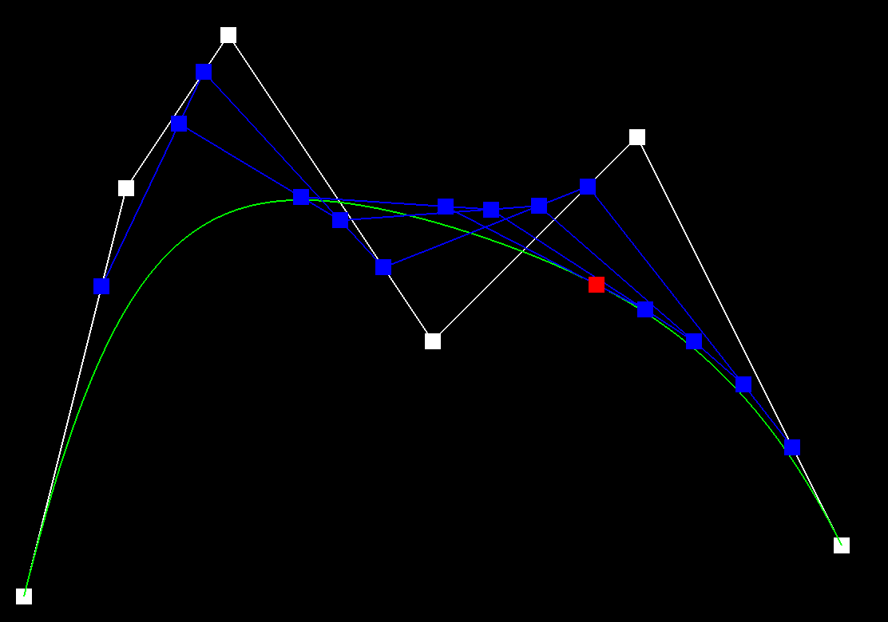
Part 2: Bezier Surfaces with Separable 1D de Casteljau
- This algorithm is similar to bilinear interpolation, where we now use an n x n array of sample points. Each nx1 array of control points in u is a Bezier curve. After finding these n points, those points correspond to the n control points for a “moving” curve in v as described in lecture. In our implementation we used an evaluate1D function that evaluates de Casteljau's algorithm for a vector of points at scalar parameter t. We used evaluate1D with each control point and u to find the moving curve. Then we used the moving curve and used evaluateD with v to find the final point.
-
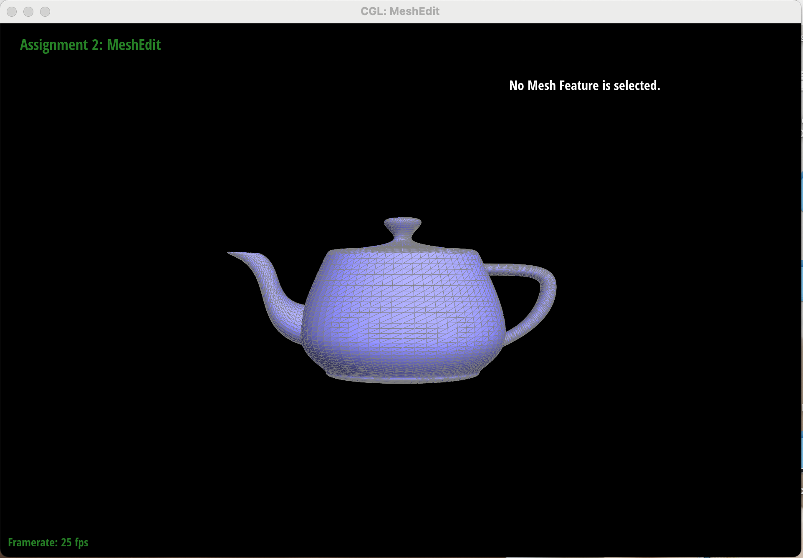
Section II: Triangle Meshes and Half-Edge Data Structure
Part 3: Area-Weighted Vertex Normals

- We started by finding the halfedge h, and then that halfedge’s corresponding vertex v. For each triangle, we have to find the three vertices, find their two common edges, and then find the vertex with these two edges. To do this, in a do-while loop, we first find the halfedge’s twin, find its vertex, and then find that vertex’s halfedge, from which we used that half edges twin to get the third and final vertex for that triangle. At the end of the loop we set h equal to h’s twin’s next, which was a half edge in the next triangle of the vertex. The loop ends when we start at the original h halfedge.
Part 4: Edge Flip
- We started by creating variables for all of the halfedges and vertices in the triangles. We then thought of the halfedges as rotated by 90 degrees counterclockwise as the edge changed. We then split up the new triangles formed and tackled them separately. We set the BC halfedge’s twin, next, edge, vertex, and face, and did the same for BC’s twin CB. We adjusted the next() for each halfedge in the two triangles, and also set the faces for the halfedges. We ended by setting the halfedge of the vertex and the halfedge of the face of the next halfedge (CD, DB, BA).
- I forgot to reassign the faces halfedges, which took me a while to figure out while debugging.

Part 5: Edge Split
- Our implementation was done by pushing up the two middle halfedges into the top two new triangles, instead of deleting them and creating 8 new halfedges. We started again by defining all of the current halfedges and vertices. We then created the new vertex m, 2 new faces, 6 new halfedges (we moved two halfedges upward to the top left and right triangles), and 3 new edges. We then set the neighbors for each of the new 6 halfedges. We set the new neighbors for the outside halfedges and set the halfedges for the edges and the new vertex m. Finally, we set the halfedges of the faces for each new face.

Nearest, Supersample Rate: 1 
Nearest, Supersample Rate: 16

Bilinear, Supersample Rate: 1 
Bilinear, Supersample Rate: 16 - Nearest pixel sampling chooses the closest sample, so there is a bit of warping that occurs. Bilinear pixel sampling, on the other hand, is essentially a weighted average of its closest neighbors and thus creates a much smoother and clearer line as shown between the four images. Additionally, nearest neighbor is better for non-continuous or categorical data, such as simple classification problems. Bilinear is the opposite—it performs better on continuous data like slopes or elevation. There will be a large difference between the two methods when looking at the 1 pixel per sample images of nearest and bilinear sampling. This is because in the 16 sample per pixel images, supersampling already significantly reduces aliasing so changing to bilinear does not have as much of an effect and therefore results less differences between the two sampling methods. This can be seen above.
Part 6: Loop Subdivision for Mesh Upsampling
- Level sampling is estimating the texture footprint using texture coordinates of neighboring screen samples, translating from the screen space (x,y) to texture space (u,v). To implement level sampling in texture mapping, we used barycentric coordinates once again with (x+1,y) and (x,y+1). We then found uv coordinates to find respective du/dx, dv/dx, du/dy, and dv/dy. Then, using the following equation: 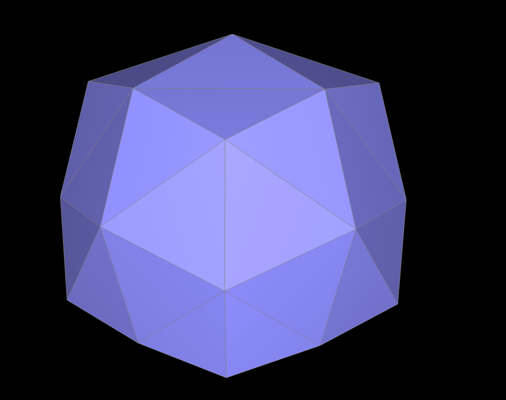 . We used this equation to determine the level D. We then lerped this on our sample.
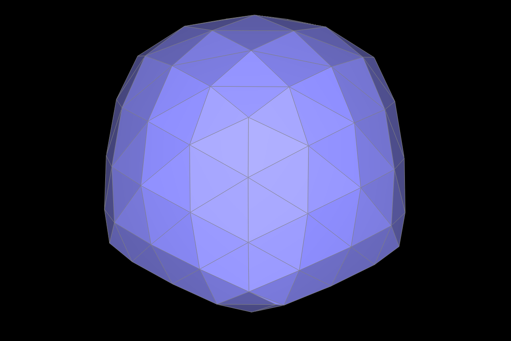 L_ZERO, P_NEAREST 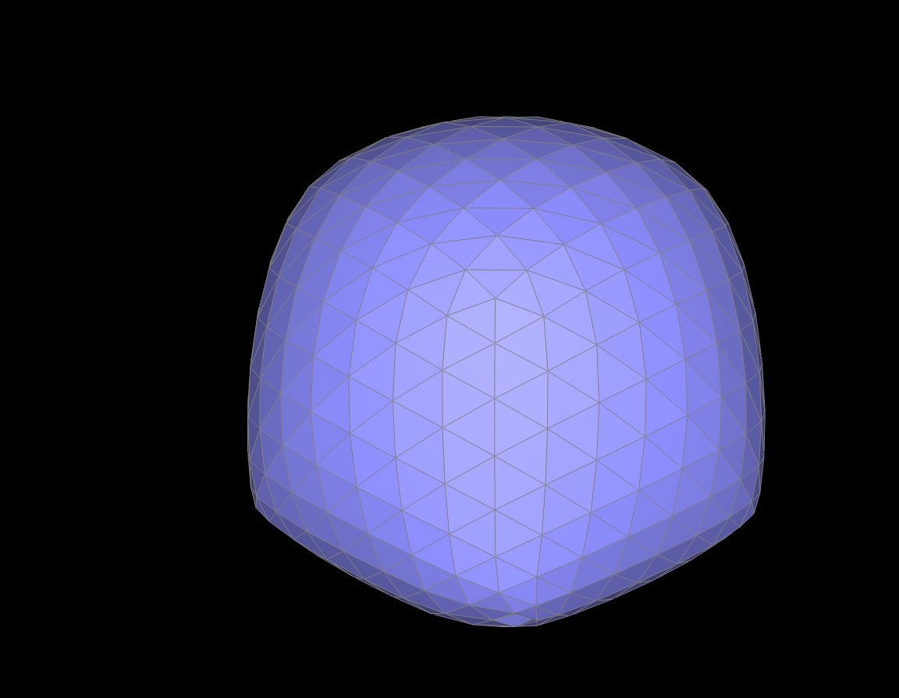 L_ZERO, P_LINEAR
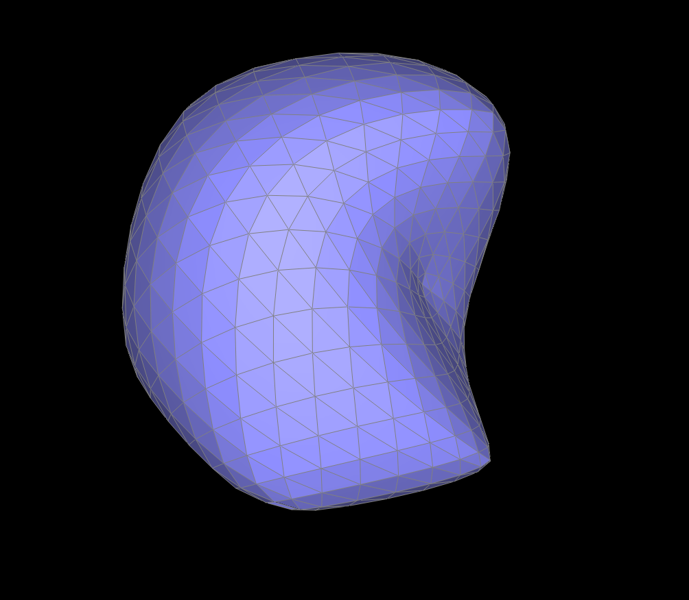 L_NEAREST, P_ZERO 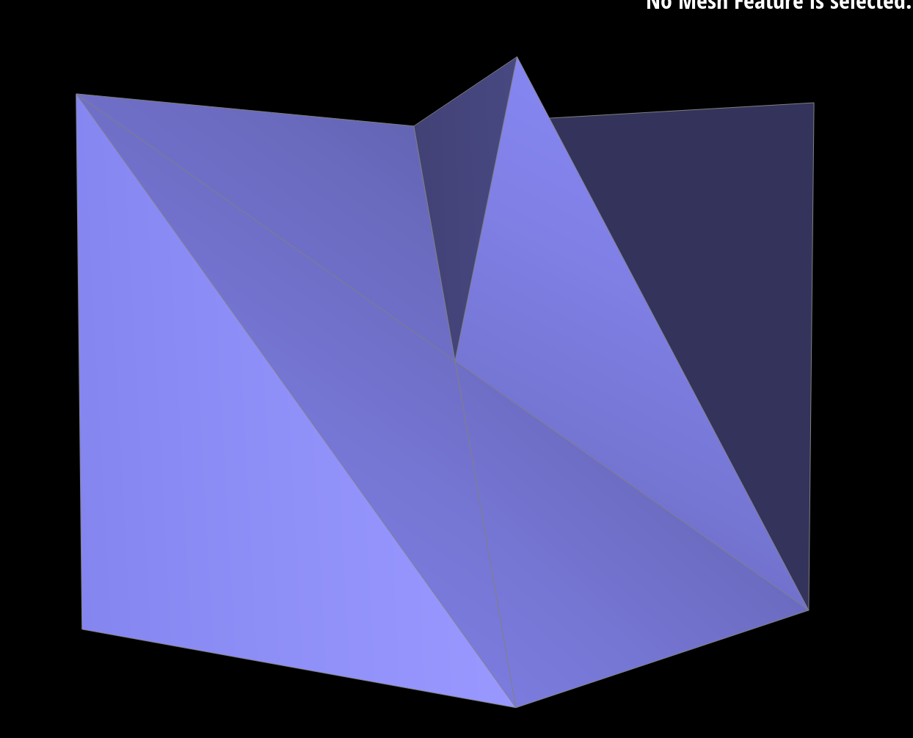 L_NEAREST, P_LINEAR
Section III: Art Competition
If you are not participating in the optional art competition, don't worry about this section!